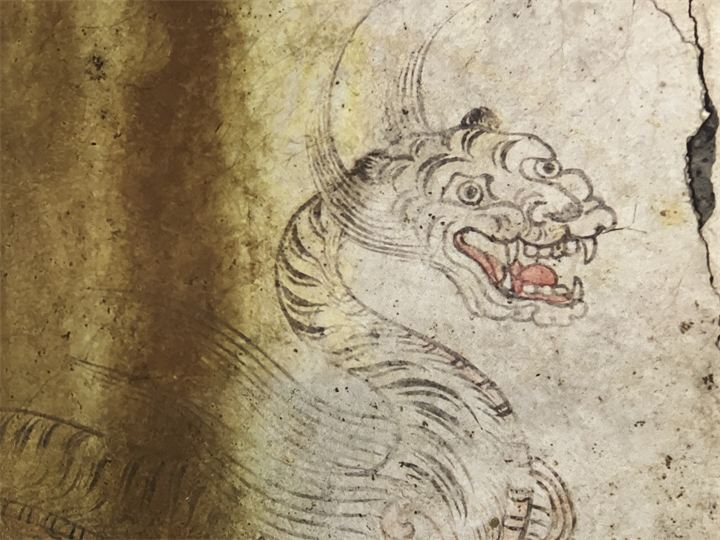

特別史跡 キトラ古墳
直径約14メートルの小さな円墳ですが、飛鳥時代を代表する終末期古墳として高い歴史的価値があります。

キトラ古墳は、7世紀末から8世紀初め頃に築かれた終末期古墳です。 石室内から発見された四神壁画や天文図は日本を代表する文化財として知られ、 国の特別史跡・国宝にも指定されています。現在は古墳周辺が歴史公園として整備され、 四神の館とあわせて飛鳥時代の文化に触れられる人気スポットです。
| 見学時間 | 古墳外観は終日見学自由 四神の館は9:30～17:00（最終入館16:30） |
|---|---|
| 休館日 | 12月29日～1月3日（四神の館） |
| 料金 | 無料 |
| 所要時間 | 約40～60分 |
| 駐車場 |
キトラ古墳周辺地区 第1駐車場
（徒歩約2分・無料）
キトラ古墳周辺地区 第2駐車場 （徒歩約4分・無料） |
| アクセス |
近鉄壺阪山駅から徒歩約15分。 または近鉄飛鳥駅から奈良交通バス利用でもアクセスできます。 |
| 地図 | 地図はこちら |

直径約14メートルの小さな円墳ですが、飛鳥時代を代表する終末期古墳として高い歴史的価値があります。

壁画や天文図の発見について映像や展示で学べる施設です。実物公開が行われることもあります。
キトラ古墳は1983年に発見され、石室内から青龍・白虎・朱雀・玄武の四神壁画や天文図、 十二支像などが確認されました。これらは飛鳥時代の高度な文化や中国文化の影響を伝える極めて貴重な資料であり、 古墳は特別史跡、壁画は国宝に指定されています。現在は保存と公開を両立するための施設整備が進められています。